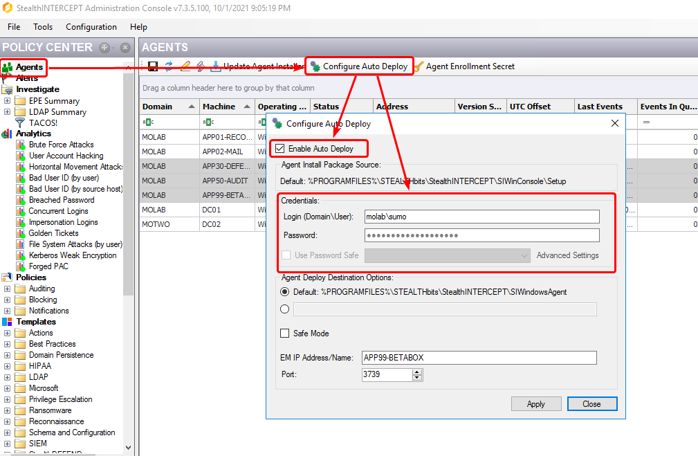

- Open the StealthINTERCEPT Console.
- In the Policy Center on the left side of the console, click on Agents.
- Along the top bar of the Agents screen click on Configure Auto Deploy.
- Ensure the checkbox for Enable Auto Deploy is checked to enable the form controls.
- Enter a fake username and password into the credential fields (i.e., an account that doesn't exist).
- Click Apply.
- Uncheck the Enable Auto Deploy checkbox.
- Click Apply.
